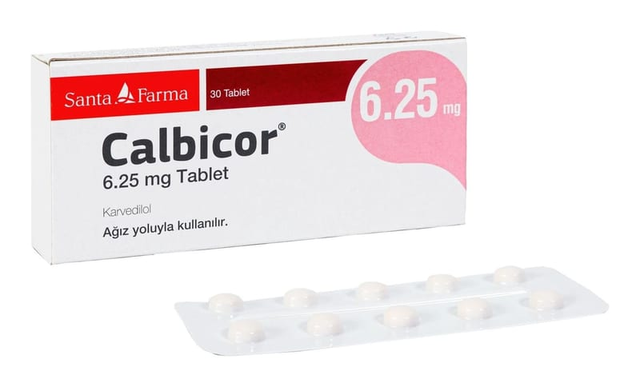

Calbicor 6,25 mg Tablet, 30 Adet

Ne için kullanılır
KT · Bölüm 1CALBİCOR®, karvedilol adı verilen bir etkin madde içerir. Bu, “beta-blokerler” adı verilen bir gruba dahildir.
CALBİCOR®, 30 tabletlik blister ambalajlarda sunulur. Açık sarı renkli, yuvarlak, hafif bombeli, bir tarafı çentikli, diğer tarafında C2 logosu bulunan tabletler şeklindedir.
CALBİCOR®aşağıdaki durumların tedavisinde kullanılır: Yüksek kan basıncı (hipertansiyon) Anjina (kalbiniz yeterince oksijen almadığı zaman oluşan göğüs ağrısı veya rahatsızlık) Kronik kalp yetmezliği
Doktorunuz CALBİCOR®dışında durumunuzu tedavi etmek için başka ilaçlar da verebilir.
CALBİCOR®, sığır kaynaklı laktoz monohidrat içerir.